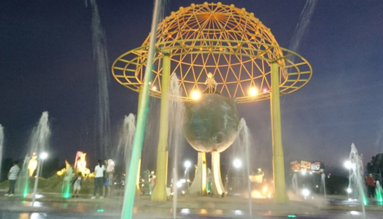

El centro histórico de la ciudad de San Salvador esta constituido por los lugares que en el pasado fueron de vital importancia para el desarrollo del país, así como también aquellos sitios cuya arquitectura goza en calidad y buen gusto y a pesar del paso de los años conserva historias del ayer.
Estos lugares fueron los que tuvieron la importancia en sus tiempos, fueron el centro de poder político de El Salvador. El centro Histórico esta constituido por: El palacio Nacional, La catedral metropolitana, Iglesia El Rosario, Teatro Nacional, entre otros.
La Policía Nacional Civil en su división de turismo realiza tours por el centro histórico en las noches, las personas gustan de este tipo de actividades ya que son de gran valor cultural donde se descubre la historia de nuestro ayer y se logra comprender mejor muchas de las situaciones que actualmente pasan.
Si su interés es conocer la historia de El Salvador no hay mejor manera de hacerlo que realizando un recorrido por su centro histórico donde podrá conocer historia y apreciar el arte y la arquitectura que posee.
|  |
Si quieres informacion acerca del lugar y registrarte a una de nuestros recorridos, usa el enlace de abajo para registrate.
Nosotros nos pondremos en contacto contigo!
-------->Reserva tu cupo <--------